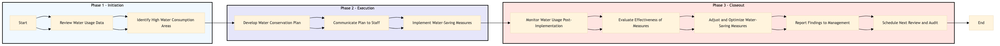

| Role | Steps |
|---|---|
| Facilities Engineer | 1.1 1.2 2.1 3.1 3.2 3.4 3.5 |
| Executive Housekeeper | 2.2 3.3 |
| Front Desk Agent | 2.2 |
| Maintenance Technician | 2.3 3.3 |
| Step | Name | Role | System | Input | Output | KPI | Dec? | Exc? | Pain Point / Risk |
|---|---|---|---|---|---|---|---|---|---|
| 1.1 | Review Water Usage Data | Facilities Engineer | Oracle OPERA Cloud | Monthly water usage reports | Anomaly report and action plan | Less than 30 minutes per review | Y | N | Inconsistent data reporting from Oracle OPERA Cloud |
| 1.2 | Identify High Water Consumption Areas | Facilities Engineer | Oracle OPERA Cloud | Anomaly report | Detailed analysis of high water consumption areas | Less than 1 hour per area | Y | N | Lack of historical data for comparison |
| 2.1 | Develop Water Conservation Plan | Facilities Engineer | Oracle OPERA Cloud, Knowcross HotSOS | Detailed analysis of high water consumption areas | Water conservation plan with specific actions and timelines | Less than 2 hours per plan | Y | N | Resource allocation for implementing the plan |
| 2.2 | Communicate Plan to Staff | Executive Housekeeper, Front Desk Agent | Oracle OPERA Cloud, Book4Time | Water conservation plan | Staff training sessions and communication materials | Less than 1 hour per session | Y | N | Resistance to change among staff |
| 2.3 | Implement Water-Saving Measures | Facilities Engineer, Maintenance Technician | Oracle OPERA Cloud, Honeywell INNCOM | Water conservation plan | Installation of water-saving devices and adjustments to operational procedures | Less than 4 hours per measure | Y | N | Compatibility issues with existing hotel systems |
| 3.1 | Monitor Water Usage Post-Implementation | Facilities Engineer | Oracle OPERA Cloud | Water conservation plan | Post-implementation water usage report | Less than 30 minutes per review | Y | N | Inaccurate monitoring tools |
| 3.2 | Evaluate Effectiveness of Measures | Facilities Engineer, Executive Housekeeper | Oracle OPERA Cloud | Post-implementation water usage report | Effectiveness evaluation and recommendations for further improvements | Less than 2 hours per evaluation | Y | N | Lack of clear performance metrics |
| 3.3 | Adjust and Optimize Water-Saving Measures | Facilities Engineer, Maintenance Technician | Oracle OPERA Cloud, Honeywell INNCOM | Effectiveness evaluation and recommendations | Optimized water-saving measures and adjustments to operational procedures | Less than 4 hours per adjustment | Y | N | Resource constraints for optimization |
| 3.4 | Report Findings to Management | Facilities Engineer, Executive Housekeeper | Oracle OPERA Cloud, Microsoft Power BI | Optimized water-saving measures and adjustments | Management report with findings and recommendations | Less than 1 hour per report | Y | N | Complexity in reporting tools |
| 3.5 | Schedule Next Review and Audit | Facilities Engineer, Executive Housekeeper | Oracle OPERA Cloud, Book4Time | Management report with findings and recommendations | Scheduled review and audit plan | Less than 30 minutes per scheduling | Y | N | Overlooking future reviews |
A structured process document for managing water conservation at a full-service Marriott hotel using Oracle OPERA Cloud PMS and other key Marriott systems.